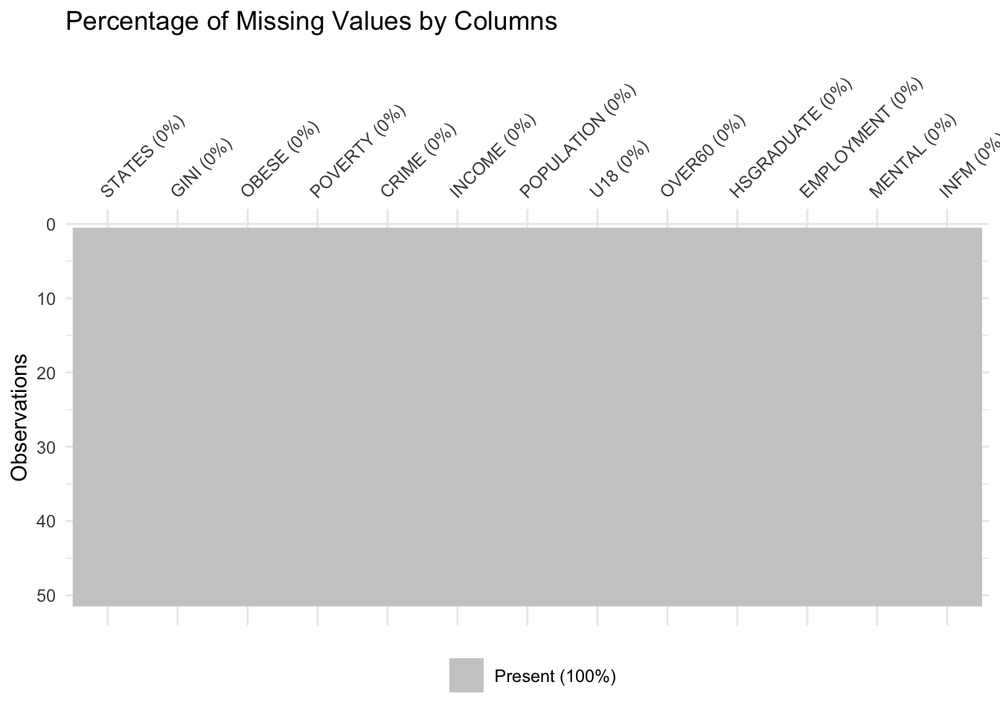
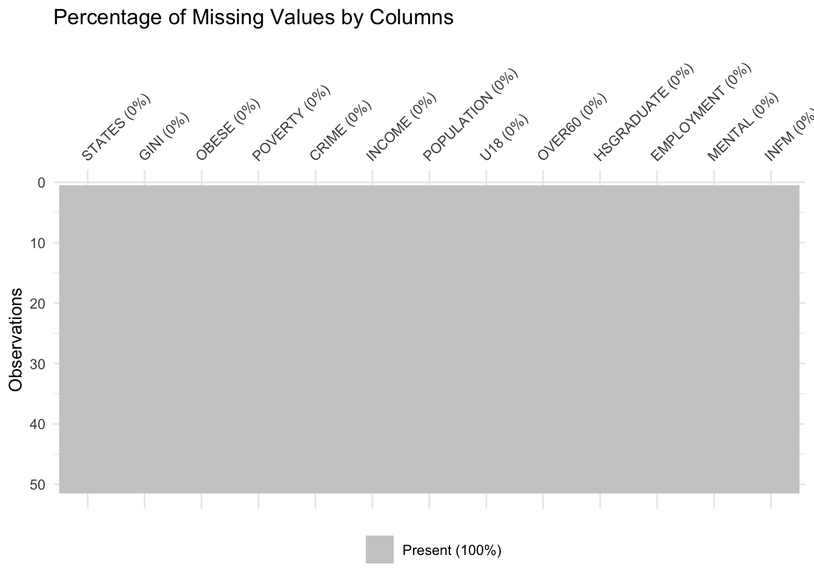

Code
library(naniar)Warning: package 'naniar' was built under R version 4.3.2Code
library(ggplot2)
states <- read.csv("States.csv")
p <- vis_miss(states) +
ggtitle("Percentage of Missing Values by Columns")
print(p)
In order answer the broad question of which is the best states within U.S to live in, we will assess factors across different living aspects that can provide indication od desirability for different households, which include economics, education, health, and safety indicators. Thus we have collected the data from multiple sources(U.S.Census Bureau, Federal Bureau of Investigation, Centers for Disease Control and Prevention, US Department of Commerce, and Mental Health America) where each being the authority on the given asepct.
The dataset has 50 rows and 13 columns, where each rows repersent each states in the United States, excluding minor island, and each column repersent each indictor of the living condition in each state(e.g population, crime rates, high school graudation rates.) All the data are collected from the year of 2022, given that this is the most recent full year.
POPULATION, U18, OVER60, POVERTY, HSGRADUATE, EMPLOYMENT, and GINI columns are gathered from U.S. Census Bureau for 50 states across United States. All the columns here are presented in termns of number of population excpet for GINI, which is an index data that goes from 0 to 1 The data from U.S. Census Bureau are collected through the census survey each year, such that the result are updated every 12 months.
OBESE and INFM columns are collected from cdc, the Centers for Disease Control and Prevention for 50 states across United States. These two columns are presented in terms of the percentage. Their data are collected from various health insititutions including hospitals and local doctor’s office. The data is nomrally updated yearly.
The MENTAL column is collected from Mental Health America. This is a ranking goes from 1- 51. The ranking is Made up by 7 measures combined,including Adults with Any Mental Illness (AMI), Adults with Substance Use Disorder in the Past Year, Adults with Serious Thoughts of Suicide, Adults with AMI who Did Not Receive Treatment, Adults with AMI Reporting Unmet Need, Adults with AMI who are Uninsured, and Adults with Cognitive Disability Who Could Not See a Doctor Due to Costs. States that are ranked 1-10 have lower prevalence of mental illness and higher rates of access to care for adults. States that are ranked 39-51 indicate that adults have higher prevalence of mental illness and lower rates of access to care.All of the data presented in the MHA is collected through the MHA Online Screening Program.
The INCOME column is collected from Bureau of Economic Analysis. It presents the per capita personal income in U.S dollars across 50 states. Most data from bea are sourced from surveies and sponsored by fedueral agencies.
The CRIME column is collected from Federal Bureau of Investigation. Note that this column is not in percentage or in numbers while it present the number of reperted crime per 100,000 of the population. The data in FBI are collected from the monthly reports from their agencies.
Below are the description for each columns including their original sources:
STATES: Names of the 50 states in the U.S, excluding minor islands.
POPULATION: Number of population in each state of United States as of 2022.
U18: Number of population who is under the age of 18 in each state of United States as of 2022.
OVER60: Number of population who is over the age of 60 in each state of United States as of 2022.
POVERTY: percentage of people below poverty in the U.S by states in 2022.
HSGRADUATE:Number of population with high school diploma or equivalence in each state of United States as of 2022.
EMPLOYMENT: Number of employed population in each state of United States as of 2022.
Original source for all above:https://data.census.gov/table/ACSST1Y2022.S1701?q=poverty%20by%20state
OBESE: Percentage of adults with obesity in the United States as of 2022 by state.Original source: https://www.statista.com/statistics/378988/us-obesity-rate-by-state/
INFM: The infant mortality rates by states in 2022. Original source:https://www.cdc.gov/nchs/data/vsrr/vsrr033.pdf
MENTAL: The ranking for Adult mental health by states in 2022. Original Source: https://mhanational.org/issues/2022/mental-health-america-adult-data
INCOME: Personal income Per capita in the United States in 2022, by state (in U.S. dollars).Original source: https://www.statista.com/statistics/303555/us-per-capita-personal-income/
GINI: The Gini index of income inequality in the U.S by states in 2022. Original source: https://data.census.gov/table?q=gini%20index&g=010XX00US&y=2021
CRIME: Reported violent crime rate in the United States in 2022, by state (per 100,000 of the population). Original source: https://www.statista.com/statistics/200445/reported-violent-crime-rate-in-the-us-states/
Our current data will provide a baseline answer for our research questions in determining which states are best for specific household circumstances. Economics, education, health, and safety indicators are four of the most important factors that new homeowners would consider. Retirees most likely prefer to live in states with the best health features above all others, so a higher health indicator would include lower crime and poverty rates. Families with children may prioritize education the most, where there are higher rates of high school graduates and under 18 residents in order to provide a more kid-friendly environment. Young couples may prioritize states with higher gini indexes and higher employment rates because they would focus on financial stability at their age to pay off debts and potentially save to have children. Gini index measures the income distribution across the state’s population. A value of 0 represents perfect equality (straight diagonal line) for an equal balance of people in all income brackets whereas a curved line represents imbalance in certain brackets. A value of 1 represents perfect inequality, where only the last person in the entire population gets all of the wealth, thus a straight line is formed at 100% of population.
Our demographic and peers would lean more towards the category of young couples, where we prioritize financial stability. After visualizing the states that offer the most financial stability from our study, we can then filter our job search on locations based at these states, in which this process will provide us with an improve quality of life.
library(naniar)Warning: package 'naniar' was built under R version 4.3.2library(ggplot2)
states <- read.csv("States.csv")
p <- vis_miss(states) +
ggtitle("Percentage of Missing Values by Columns")
print(p)
As presented in the graph above, we can see that there is 0% of missing value for each columns and it means that this is a complete dataset. This result is expected due to two reasons: First, this is a rather small dataset with 50 rows and 13 columns so that the data is likely to be avaliable given the size. Second, considering the authority of the sources of data, including fbi, cdc, and U.S. Census Bureau, which gaurenteed the quality and credibility of the data.